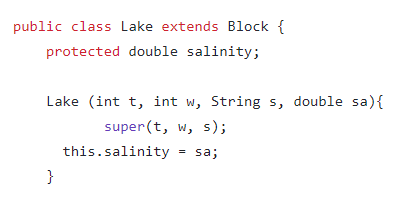
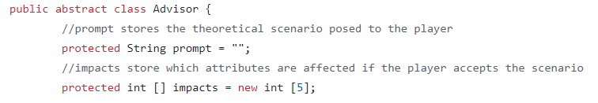
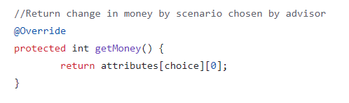

THe principle of inheritance is implemented in Java through subclasses. A subclass has the same fields and methods as the class it is inheriting from. The class being inherited from is called the super class. The extends keyword is used in the class definition to write a subclass in Java. To access methods from the super class, the super keyword is used to call these methods. This is commonly used in the class constructor.
In this example, the class Lake is a subclass of the class Block.

An abstract class works as a template. It cannot create instances of objects by itself but it can define fields and methods. An abstract class must be declared as abstract rather than public. The methods of an abstract class can also be declared as abstract, or implemented as standard methods. This can be done using the abstract keyword. In order for an abstract class to be used, a subclass must be made from the abstract class. Any abstract methods must be explicitly defined in the subclass. The advantages of using an abstract class include defining a type where the properties of subclasses need to vary greatly.
In this example, part of the code is shown for Advisor, which is the abstract class.

BigOil is a subclass made from the abstract class Advisor.
Here is a method in BigOil.
